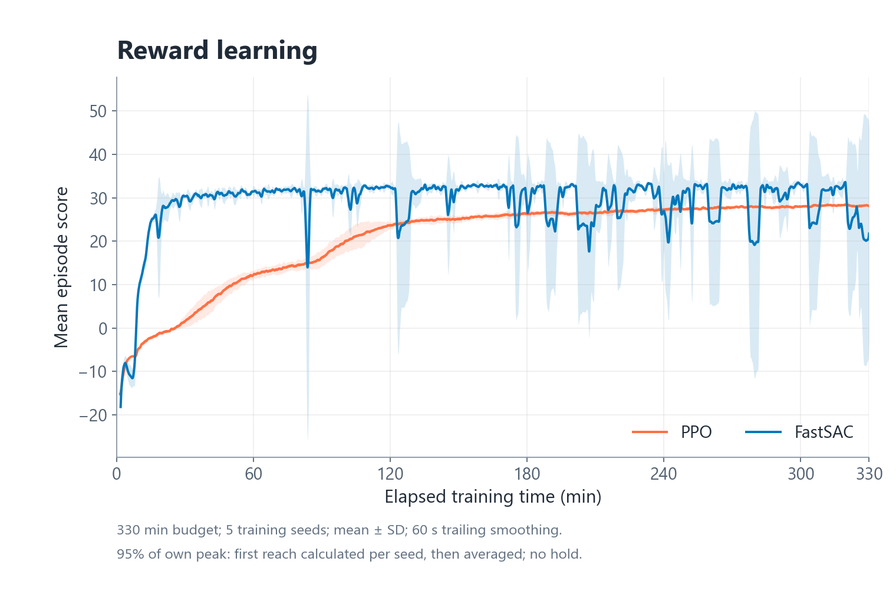
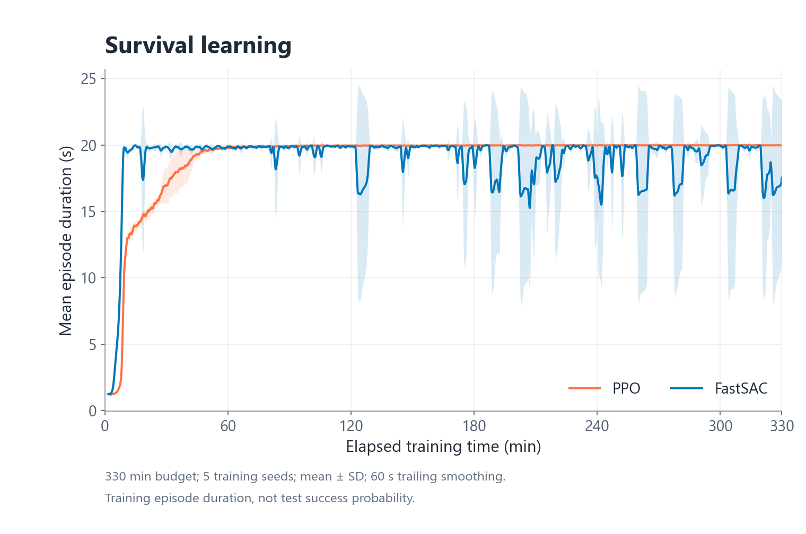
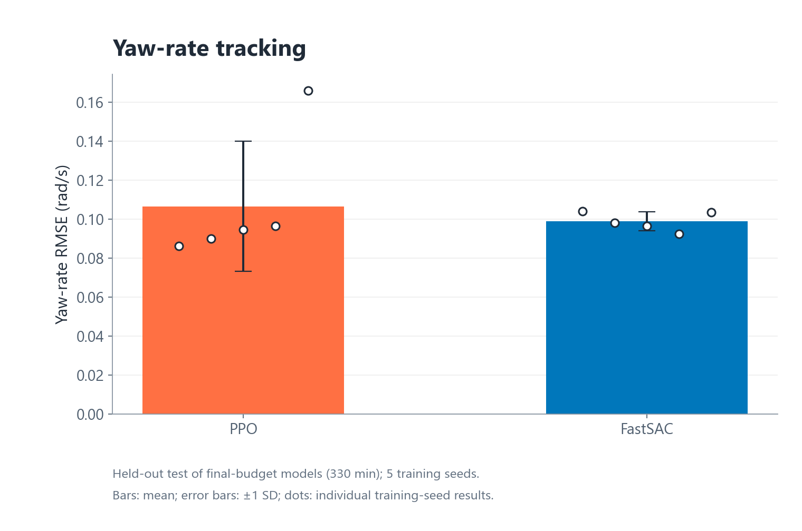

SELECTED PROJECT · 2026
AI Sapiens K1: Humanoid Locomotion Learning
Isaac Lab / Cyclo Lab · Simulation study
From human walking models to humanoid locomotion
My master's research combined a human walking model and a wearable robot in a shared learning environment, followed by deployment of the robot policy to real hardware. This project extended that experience to the AI Sapiens K1 humanoid and explored how an off-policy learning method performs in a new robot and simulator.
I used the PPO baseline in ROBOTIS Cyclo Lab and adapted FastSAC to the same locomotion task. The K1 work reported here was conducted in simulation.
My contributions
- Ran the Cyclo Lab PPO baseline and adapted FastSAC to the same K1 robot, observations, actions, rewards, and environment settings.
- Compared five training seeds per method under a shared 5.5-hour time budget, separating checkpoint selection from held-out testing.
- Reduced the time to first reach 95% of each run's peak mean episode score by 65.6%: PPO 203.3 min versus FastSAC 70.0 min, averaged across five training seeds.
- Reduced mean planar velocity tracking RMSE by 22.8% in held-out flat-ground simulation tests under the shared training-time budget.
Training and evaluation
Both methods used the same K1 model and task settings, with five training seeds per method. Comparisons used a common 5.5-hour wall-clock budget, including initialization, logging, and checkpoint saving.
For each run, six checkpoints near the end of the budget were evaluated under identical validation conditions. One checkpoint was selected per run by survival, followed by velocity tracking error. The selected policies were then tested with separate evaluation seeds and matched initial states: eight commands, sixteen initial states, and three evaluation seeds, for 384 episodes per policy.
Evaluation used deterministic policies with frozen observation normalization. These are flat-ground simulation results without external pushes; rough-terrain and K1 hardware transfer were not evaluated.
Time to reach 95% of peak mean episode score
FastSAC reduced the time to first reach 95% of each run's own peak mean episode score by 65.6% relative to PPO.
| Training milestone | PPO | FastSAC |
|---|---|---|
| First reach of 95% of the run's peak mean episode score | 203.3 ± 16.2 min | 70.0 ± 10.0 min |
For each seed, a 60 s trailing mean was applied to the training episode score. Its own maximum within the common 330 min budget defined the 95% threshold. The first-reach time was computed per seed and then averaged; it is not the crossing of the plotted mean curve. No hold period was required. This post-hoc measure describes first attainment, not sustained convergence.


Held-out velocity tracking
FastSAC reduced mean planar velocity tracking RMSE by 22.8% relative to PPO under the shared training-time budget.
| Metric | PPO | FastSAC |
|---|---|---|
| Planar velocity RMSE (m/s) | 0.0995 ± 0.0149 | 0.0768 ± 0.0041 |
| Yaw-rate RMSE (rad/s) | 0.1066 ± 0.0334 | 0.0989 ± 0.0049 |

Tracking RMSE excludes the first two seconds and uses observations until episode termination. One episode per method ended before the tracking window and was excluded from RMSE. These measurements describe the tested simulation conditions, not general hardware performance.
Training progress at 15, 70 and 120 min
PPO vs. off-policy FastSAC at 15, 70 and 120 min
Project foundations
ROBOTIS Cyclo Lab provided the K1 simulation task and PPO baseline. The off-policy adaptation was informed by Learning Sim-to-Real Humanoid Locomotion in 15 Minutes (FastSAC). This project applies the method to K1 under the conditions described above.